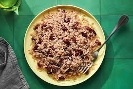

Jamaican Rice and Peas
Home

Finished Picture of the Recipe
Made with Red Kidney Beans, this dish blends the creamy texture of the coconut milk with the savoury flavour of the spices used. Please enjoy this meal!!
Ingredients
- 1 cup dried kidney beans, rinsed, soaked overnight, and drained
- 3 Cups of Water
- 1 Small Finely Chopped Onion
- 2 Finely Chopped Scallions
- 3 Garlic Cloves that are minced
- 5 Allspice Berries
- 1 Scotch Bonnet Pepper
- 5 Thyme Sprigs
- 1/2 tsp of grated ginger
- 1 tsp of Salt
- 1 tbsp of MSG
- 1 Can (13.5oz) of Unsweetened Coconut Milk
- 2 Cups of Jasmine Rice
Steps
- Gather you ingredients.
- In a large saucepan, cover the beans with the water and bring to a boil over moderately high heat. Stir in the onion, scallions, garlic, allspice, thyme, Scotch bonnet, ginger, 2 teaspoons salt, and 1/2 teaspoon pepper.
- Stir in the coconut milk and bing to a simmer
- Cover and simmer over low heat until the beans are tender, about 1 hour; adjust the heat as necessary to maintain a gentle simmer.
- Stir in the rice; cover and simmer over low heat until the rice is tender and the liquid is absorbed, about 30 minutes.
- Remove from the heat and let steam for 10 minutes, then discard the thyme stems, allspice berries, and Scotch bonnet. Using a fork, fluff the rice and beans and season with salt.
- Serve Hot!